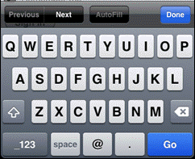
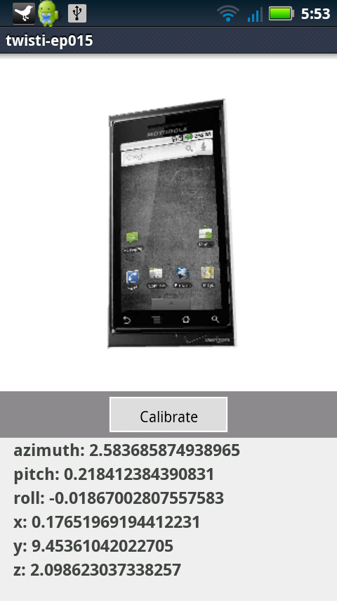
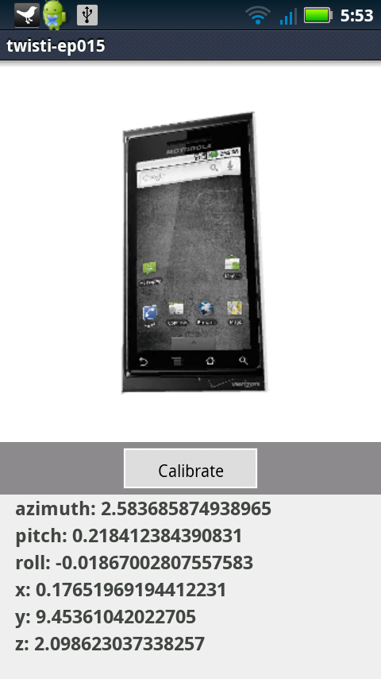

Integrating Web Content
Titanium Certified Developer (TCD) Training
In this lesson, you will:
- Integrate the WebView component into your application
- Explore WebView gotchas that you must watch out for in your apps
- Identify novel uses of the WebView
Why the WebView?
- You've got HTML content to show
- Canvas, SVG, MathML or other browser-compatible rendering
- Scraping web content
- Integrate existing web content (news pages, newsletter signup forms, etc.)
- Long data entry forms in your app
When not to use the WebView
- To render your whole UI
- If you need easy integration with the Titanium APIs or device/OS features
- In a TableView
- When performance is critical
Remote Web Content
<Alloy>
<Window class="container">
<WebView url='http://www.example.com'>
</Window>
</Alloy>
var webview = Ti.UI.createWebView({
url:'http://www.example.com'
});
win.add(webview);
Local Web Content
<Alloy>
<Window class="container">
<WebView url='myfile.htm'>
</Window>
</Alloy>
var webview = Ti.UI.createWebView({
url:'myfile.html'
});
win.add(webview);
Put your HTML files in the assets folder (or Resources for non-Alloy projects) or subdirectories of that location
Inline HTML
<Alloy>
<Window class="container">
<WebView id='web'>
</Window>
</Alloy>
// in the controller
// typically, html is retrieved from web
// and rendered as inline content
$.web.html = '<p>This is <b>HTML</b>.</p>';
Viewport Control
<meta name="viewport"
content="width=device-width, minimum-scale=1.0,
maximum-scale=1.0, user-scalable=no">
Keyboards and Hint Text

<input type='text' placeholder="Full name"/>
<input type='url'/>
<input type='email'/>
<input type='number'/>
<input type='tel'/>

(number & email keyboards)
 Topic
Topic
WebView Considerations
Communicating With The Wrapper
Remote web content has no access to Titanium APIs
Limited Titanium API access within local web pages:
- Logging APIs (Ti.API.info and friends)
- App-level Events (Ti.App.fireEvent/addEventListener)
Native APIs must be accessed indirectly via application level events
WebView Gotchas
Among the most expensive components to create
Should not be embedded in other scrollable views
Common misuse - inside TableViewRows (bad performance)
It is possible to implement your whole UI in HTML/CSS, but native UI is what your users expect
Android Compilation
- By default, Titanium processes all JavaScript in the resources directory on Android to optimize for native apps.
- Must override for "hybrid apps" to preserve HTML paths
- Entry in tiapp.xml
<property name="ti.android.compilejs" type="bool">false</property>
Topic
Novel Uses of the WebView
Integrating Web Tools
- Graphing & other libraries
- Canvas not supported on Android < ~4.0.3
- jQuery only libraries include Sparklines, Flot, and others

SVG Transformations
- Transform images
- 2D/3D animations
 

SneezeAlarm (iTunes in Great Britain) and Twisti (Forging Titanium series)
Embedded Documents on iOS
WebView on iOS can display embedded:
| PowerPoint | ||
| Keynote | Word | |
| Numbers | RTF | |
| Pages | RTF Directory | |
| Excel |
Demo
- What you will demo
Summary
In this lesson, you:
- Integrated the WebView component into your application
- Explored WebView gotchas that you must watch out for in your apps
- Identified novel uses of the WebView
Q&A
Lab Objectives
In this lab, you will:
- Create an RSS Reader
- Pull data from an XML feed
- Display individual blog posts in a WebView
- Create an "about" page using local HTML
wiki.appcelerator.org/display/td/285+Integrating+Web+Content
Solution Walkthrough